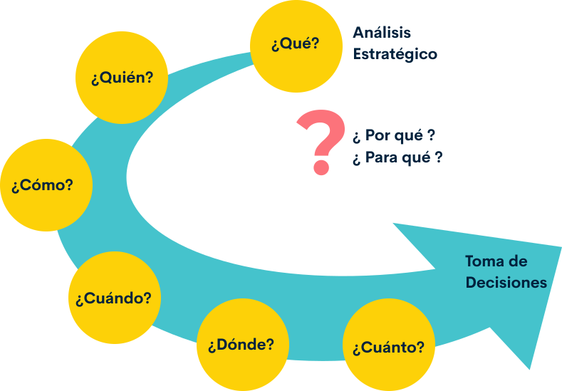
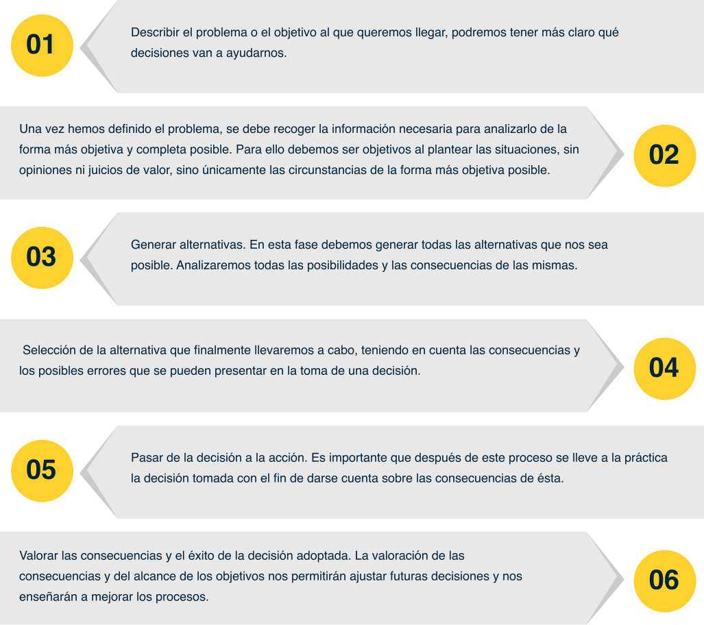
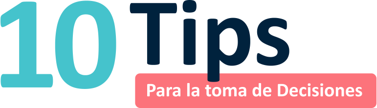
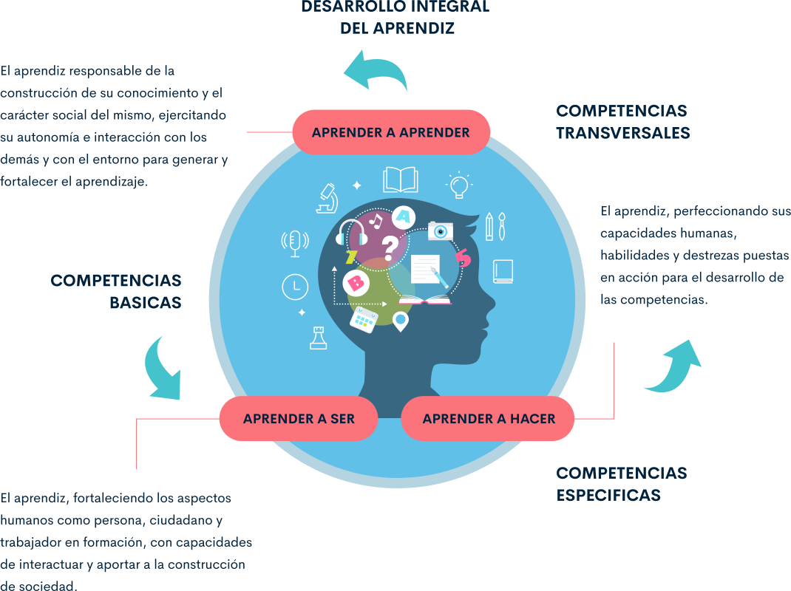

1. La formación ética desde la familia
1.1. La familia
La familia es un grupo de personas unidas por el parentesco, esta unión se puede conformar por vínculos consanguíneos o por un vínculo constituido y reconocido legal y socialmente, como lo es el matrimonio o la adopción. La familia, es la organización social más general, pero así mismo, la más importante para el ser humano y la sociedad; de ella emanan los valores fundamentales que la caracterizan. Ya sea por vínculos sociales, legalmente consagrados o por vínculos sanguíneos, pertenecer a una agrupación de este tipo es de vital importancia en el desarrollo psicológico y social del individuo.
La constitución de la familia, por lo general, se hace a través del matrimonio, donde dos individuos se procuran amor, respeto, igualdad y ayuda mutua, con la posibilidad de procrear hijos de manera libre, responsable e informada.
Los compromisos derivados del matrimonio son: la convivencia, la asistencia, las obligaciones económicas y la obligación con los hijos.
Familias biparentales
Familias reconstituidas
Familias adoptivas
Familias de acogida
Familias monoparentales
Familias extensas
Deberes y derechos que nacen con el matrimonio:
El deber de la cohabitación
El deber de la fidelidad
El deber de la asistencia y ayuda mutua.
Estos a su vez, tienen como propósito, construir familias sanas que permitan la construcción de una sociedad fuerte y sólida con personas éticamente responsables.
Con el paso del tiempo, los procesos de industrialización y de urbanización, han generado un cambio de perspectiva sobre la familia, entre ellos, la delimitación de la familia a la pareja e hijos y la desaparición al enraizamiento de la tierra.
Lo anterior, se hace evidente en las siguientes características:
El mundo del trabajo ya no es a escala familiar.
El tejido urbano se generaliza.
El rol de la mujer cambia.
La familia se hace móvil.
La familia de hoy busca asegurar su autonomía.
La familia es una comunidad abierta en su interior para el exterior y cada uno aprende a ser persona en el seno de tal comunidad. Por lo tanto, podemos hablar de una ética de la alteridad (Filosofía de Emmanuel Lévinas, 1998), que se deriva de la presencia del otro en mi vida, “yo me hago persona en cuanto doy de mi al otro que también se hace persona”. Por ello, la base de la educación desarrollada por la familia, consiste en transmitir al niño las normas y los valores que le permitirá entender cómo funciona el mundo que lo rodea (Esteve, 2010).
Por consiguiente, vivir de modo humano, se constituye en un compromiso personal para hacer tangibles y reales los valores aprendidos en el seno familiar a través de la conducta y comportamiento, con el fin de promoverlos en la convivencia sana con los demás. El “valor” surge cuando vivimos una experiencia que nos demanda y nos invita a darle una respuesta dejando a un lado la indiferencia, generalmente, estas experiencias nos atraviesan, nos forma o nos transforma. La experiencia, es fuente de aprendizaje ético, a partir del cual, decidimos qué aceptamos o qué rechazamos en respuesta a nuestro modo de vida.
Los valores, son creencias prescriptibles que orientan nuestra conducta, convicciones profundas que justifican nuestra existencia, y que se plasma a lo largo de nuestras vidas. Los valores morales son nuestras creencias más arraigadas, como si fuera el “alma” de nuestras vidas; estos demarcan y configuran nuestra personalidad, dando sentido a nuestra vida.
1.2. Reconocer al otro, normas sociales
Amador (2004), señala que educar correctamente al niño exige que, desde muy temprana edad, se le enseñen ciertas normas y hábitos de vida que garanticen tanto su salud física y mental como su ajuste social.
De acuerdo con lo anterior, podemos afirmar que, la familia se constituye en una de las instituciones y unidades básicas de la sociedad, donde, los individuos realizan las primeras socializaciones y adquieren los primeros aprendizajes, normas y reglas que, determinan la manera de actuar, sentir y relacionarse con el mundo. Estas normas y reglas sociales son disposiciones que tienes que ver con: valores, costumbres, rituales y conductas que están asociadas a normas morales o a la tradición oral y cultural de cada sociedad.
Entonces ¿Qué son las normas sociales?
Las normas sociales, son un conjunto de pautas de referencia que, crean una serie de límites y que sirven como modelo, tanto mental como conductual, para relacionarse con el mundo, estas normas se encuentran implícitas en las relaciones y moldean gran parte de nuestras perspectivas; son implícitas porque, aunque están siempre presentes, no siempre es necesario expresarlas en voz alta.
Las normas sociales regulan el comportamiento de los integrantes de un determinado grupo social, clasificando estas conductas en aceptables o no aceptables. Además, las normas pueden variar igualmente según el contexto ya sea a nivel laboral, familiar, en el ámbito de pareja o con los amigos, o la situación en la que nos veamos envueltos.
¿Para qué sirven las normas sociales?
Todas las sociedades se rigen por normas que buscan garantizar la buena convivencia entre las personas, y de esta manera, no se vulneren las libertades y los derechos. Por esta razón, las normas están encaminadas a evitar conductas que pueden ser destructivas como: la violencia, los actos criminales, las conductas que se consideran antisociales u otros actos que dañan o perjudican a la sociedad en general. Veamos algunos puntos que nos pueden ayudar a responder a esta pregunta:
Sirven para que funcione la sociedad
Las normas son un elemento importante del sistema social y la convivencia, gran parte de nuestra vida está organizada por normas que promueven patrones de conductas que se ajusten a lo que nuestro grupo social requiere.
Tienen una función de regulación y guía del comportamiento
Las normas ejercen control sobre la conducta de las personas, sirven en para indicar y delimitar las actividades, responsabilidades, obligaciones y alcances que tiene cada individuo.
Mantienen el orden social
El orden social hace referencia a un concepto que tiene origen en las ciencias sociales, nos habla de una estructura que consigue que un grupo de personas pueda mantenerse unido sin que reine el caos.
Otorgan cohesión a la sociedad
Cuando se habla de cohesión desde el ámbito social, hace referencia a la aceptación y consenso de un grupo de personas, a la percepción de pertenencia que se tiene a ese determinado grupo, comprender que formó parte de un grupo y está unido.
Ayudan a conseguir el autocontrol individual
Al cumplir con una norma que se aplica a toda la sociedad de alguna manera se crea un límite no sólo social, sino individual, se trata de promover y obtener un mayor control de uno mismo basado en la disciplina impuesta al cumplir las normas.
Tipos de normas
Existen diferentes tipos de normas que orientan el desarrollo social, cultural y político de la sociedad. El video que te presentamos a continuación, Amoedo 82020), nos ilustra en esta tipología. Observa con atención. Para iniciar, haz clic en el video:
1.3 La influencia de la ética en la toma de decisiones
En todos los ámbitos de la vida, existe una disposición natural referida a la toma de decisiones, pero cuando se involucra la ética, este tipo de razonamiento debe estar basado en principios y valores, de tal manera que, le permitan al individuo tomar decisiones correctas o aceptables. Sin embargo, no se ha establecido un procedimiento único para realizar un proceso de toma de decisiones, pues esto varía de acuerdo a cada persona y lo que ella considere importante frente a la situación que esté viviendo.
Durante el proceso que seguimos para la toma de una decisión, podemos hacernos las siguientes preguntas: ¿quiénes deben intervenir en el proceso de decisión?, ¿quiénes deben definir las alternativas?, ¿cuáles son las alternativas posibles?, ¿quiénes deben participar en la definición de los criterios de decisión?, ¿quiénes deben evaluar las alternativas?, ¿cuáles áreas de su vida se verán afectadas por su decisión?, ¿cuál es el criterio al que le dará más peso para tomar su decisión?, etc
Estas preguntas se concretan en un proceso de toma de decisiones y del cual, en diversas ocasiones, no consientes. A continuación, vamos a describir seis pasos que deberás tener en consideración en el momento que debas tomar una decisión, ya sea en una situación particular de la vida cotidiana o en el mundo laboral.
Tanto en la vida personal y profesional, la ética debe permear los procesos de toma de decisión, de manera que, cuando surjan los dilemas de dos o más alternativas que presentan condiciones de incertidumbre para actuar bien, se pueda actuar bajo los parámetros éticos establecidos para el ejercicio de la profesión o como individuos. Si bien es cierto, no todos los conflictos son de naturaleza ética, estos surgen cuando aspectos relacionados con la moral, con la conciencia, entran en desacuerdos con nuestra vida y demanda la toma de decisiones éticas.
Para finalizar, se presentan diez tips para la toma de decisiones que, junto con las estudiadas con anterioridad, podrán ser de gran ayuda en el momento de afrontar situaciones que requieran la toma de decisiones propias.

Toma conciencia del proceso de Toma de Decisiones
Decide activamente y sé consciente del proceso de toma de decisiones.
¡RECUERDA!:
No eres responsable del resultado de la decisión, pero si de como la tomas.
Identifica Claramente tus objetivos
Reflexiona sobre aquello que realmente quieres conseguir (tus objetivos primarios.) Sé ambicioso con tus objetivos si buscas resultados que tengan impacto.
¡CUIDADO!:
Es fácil embelesarse con objetivos secundarios o excesivamente conformistas.
Sé realista en el planteamiento del problema
Céntrate en los hechos y no en las opiniones y juicios de valor.
¡CUIDADO!:
No busques culpables ni incluyas la solución en el enunciado del problema (estarás limitando tus alternativas y capacidad de decidir).
No te autoengañes
Evita cometer el error de buscar pretextos para justificar decisiones erróneas (es un mecanismo subconsciente natural del ser humano).
¡RECUERDA!:
El enemigo muchas veces puede ser tú mismo.
Atiende solo la información relevante
Evita gestionar millones de datos poco significativos, evitarás perder tiempo.
¡CUIDADO!:
No desestimes información relevante porque sea contraria a tus intereses.
Reconoce y gestiona la incertidumbre
Mantén el escepticismo sobre tus propias suposiciones, esto te permitirá replantar la situación y tomar mejores decisiones.
¡IMPORTANTE!:
Tomar una decisión implica asumir riesgos.
Sé creativo
Genera un buen numero de alternativas, es peligroso tener una única idea.
¡CUIDADO!:
No confundas la fase de “generación de ideas” con “evaluación de ideas”.
Tus decisiones tienen consecuencias
Ten en cuenta que las decisiones que tomes tendrán consecuencias sobre el problema, los demás y sobre ti mismo.
¡RECUERDA!:
Ten en cuenta los potenciales resultados negativos antes de tomar una decisión.
Pon en práctica tus decisiones
Realiza lo que has decidido y préstale atención a como se ejecuta.
¡RECUERDA!:
De nada sirve la reflexión si no va acompañada de la acción.
Ten en cuenta que no todo es racionalidad
Apártate de la vertiente racional, también debes tener en cuenta la emocional.
El papel de la intuición es fundamental en las decisiones que se tienen que tomar rápidamente.
¡CUIDADO!:
La intuición solamente funciona cuando hay mucha experiencia en la toma de decisiones.
2. ¿Cómo me convierto en un ser social?
2.1. Ambientes sociales: concepto
Los seres humanos creamos un espacio social donde interactuamos, crecemos y nos desarrollamos, tales como: la infraestructura, las relaciones sociales y el universo cultural que nos rodea.
El entorno social está constituido, en el aspecto físico, por las ciudades y otros asentamientos creados por el ser humano, por el modo en que estos se relacionan entre sí y por las distintas estructuras culturales, políticas y sociales que actúan sobre cada uno y sobre el conjunto de las personas. Este concepto, puede equivaler a otros conceptos como sociedad, contexto social, ámbito, ambiente social.Características del entorno social
El entorno social abarca dos aspectos: el material y el inmaterial.
Aspecto material
Comprende el conjunto de viviendas, servicios públicos, vialidad, pueblos, ciudades, etc., que rodean y contienen a cada individuo.
El hogar, la escuela, la universidad y la empresa o lugar de trabajo, constituyen los sitios primordiales en donde se generan las interrelaciones del entorno social, y de ellos, depende en gran medida la salud física y mental de las personas.
Aspecto inmaterial
El aspecto inmaterial, es el que tiene que ver con las relaciones de parentesco (familia), el idioma, la clase social, los valores culturales, religiosos, las relaciones de poder, etc. Todas estas relaciones se dan en el seno de una sociedad y comienzan en la familia.
Elementos del entorno social
Los elementos que conforman el entorno social, pueden variar de acuerdo con el lugar donde se encuentre el individuo, y el peso o la importancia de estos cambia según la cultura o valores de cada grupo humano.
La familia, como primer origen de la sociedad, es la que influye principalmente en los primeros años de vida de una persona. En este sentido, es importante que en las familias se considere el respeto y el amor como algo esencial para la convivencia. El nivel socioeconómico de la familia, los ingresos percibidos, el nivel cultural de los progenitores, así como su nivel educativo, determinan la percepción de los niños y niñas de su entorno social. Así, una casa cuidada, un ambiente acogedor y protector, ayudará a que los miembros de una familia establezcan lazos sanos con su entorno. Familia
Del mismo modo, la escuela es un lugar de socialización donde aprendemos a relacionarnos con los demás; esta es una de sus funciones principales. Así mismo, cuando los niños crecen y estudian en escuelas agradables, la respuesta tanto social como académica es mucho más significativa. Por el contrario, cuando este entorno social es agresivo, desaseado o riesgoso, esto podrá traer consecuencias negativas o determinar la forma como el estudiante asume su aprendizaje tanto social como académico (https://www.lifeder.com/entorno-social/ ). Escuela
La sociedad en la que crece un individuo está formada por miles o millones de otros individuos que comparten determinados valores culturales. De acuerdo con esto, factores como la religión o los valores éticos pueden tener mayor o menor peso, y ejercer distintas influencias en cada persona. Actualmente, también podemos hablar de un entorno virtual, es decir, la participación que tienen las personas en las diferentes redes sociales; esto influye de manera decisiva en la forma como nos relacionamos con los otros, ya que traspasan fronteras, permitiendo crear interacciones sociales, establecer grupos y comunidades donde se discute y se comparte un gusto o una creencia. No obstante, a muchas de ellas no se les da el uso adecuado; ejemplo de ello, es lo que conocemos como ciberbullying (el acoso cibernético), el grooming (acoso y abuso sexual online). Sociedad
El entorno social de una empresa incluye las relaciones sociales entre los empleados en el campo laboral, las comunicaciones internas y los diferentes aspectos que usualmente las empresas abordan desde el departamento o dependencia de recursos humanos, destinados a mejorar el entorno social de cada trabajador. Esto incluye, desde un diseño adecuado del ambiente de trabajo (espacios para trabajar, para descansar, para socializar) hasta condiciones en las contrataciones, con las que los empleados se sientan satisfechos, respetados y tenidos en cuenta. Importante: Revisa la reflexión en el material complementario: Expertos le explican por qué la familia colombiana está en crisis.Entorno social de una empresa
2.2. El trabajo como elemento social en su FPI (Formación Profesional Integral).
Según el PEI, La Formación Profesional Integral que imparte el SENA, constituye un proceso educativo teórico-práctico de carácter integral, orientado al desarrollo de conocimientos técnicos, tecnológicos y de actitudes y valores para la convivencia social, que le permiten a la persona actuar crítica y creativamente en el mundo del trabajo y de la vida. Uno de los principios de la FPI, es el trabajo productivo, el cual hace referencia a la aceptación de que el desarrollo de las facultades humanas se logra fundamentalmente a través del trabajo, esto es, mediante la transformación intencional que el hombre hace de su entorno físico y social.
El mundo del trabajo, se refiere a la actividad productiva en el ámbito laboral y en el mundo de la vida, a la construcción de la dimensión personal y social. Es un proceso educativo teórico-práctico con currículos determinados por las necesidades y perspectivas de los sectores productivos y de la demanda social, estructurados a partir de diferentes niveles tecnológicos y de desarrollo empresarial, desde el empleo formal, hasta el trabajo independiente.
Dicha formación implica el dominio operacional e instrumental de una ocupación determinada, la apropiación de un saber técnico y tecnológico integrado a ella, y la capacidad de adaptación dinámica a los cambios constantes de la productividad. La persona así formada, es capaz de integrar tecnologías, moverse en la estructura ocupacional, además de plantear y solucionar creativamente problemas y de “saber hacer” en forma eficaz.
Sólo una formación fundamentada en conocimientos científicos y tecnológicos permite la comprensión de la dinámica productiva y facilita la movilidad y promoción laboral del trabajador. La formación profesional articula el conocimiento a la operación para lo cual se requiere manejar el concepto como categoría que posibilita la comprensión, la explicación y la transformación.
FORMACION PROFESIONAL INTEGRAL (FPI)
La formación profesional que imparte el SENA, constituye un proceso educativo teorico-práctico de carácter integral, orientado al desarrollo de conocimientos técnicos, tecnológicos y de actitudes y valores para la convivencia social, que le permiten a la persona actuar crítica y creativamente en el mundo del trabajo y de la vida.
APRENDIZAJE POR PROYECTOS
La formación en el SENA se implementa mediante el aprendizaje por proyectos formativos que tienen como finalidad, la potencialización y desarrollo de las competencias Específicas y Generales laborales
Glosario
Entorno social:el entorno social, también denominado contexto social o ambiente social, es el lugar donde los individuos se desarrollan en determinadas condiciones de vida, Trabajo, economía, nivel de ingresos, nivel educativo y está relacionado con los grupos a los que pertenece.1 El entorno social de un individuo es la cultura en la que el individuo fue educado y como vive, y abarca a las personas e instituciones con las que el individuo interactúa en forma regular.
Escuela:como escuela se denomina de manera general cualquier centro donde se imparte enseñanza, en cualquiera de los niveles de educación: preescolar, primario, secundario, preparatorio, universitario.
Familia:una familia es un grupo de personas unidas por el parentesco. Esta unión se puede conformar por vínculos consanguíneos o por un vínculo constituido y reconocido legal y socialmente, como es el matrimonio o la adopción.
Formación Profesional integral:la Formación Profesional Integral es el proceso mediante el cual la persona adquiere y desarrolla de manera permanente conocimientos, destrezas y aptitudes e identifica, genera y asume valores y actitudes para su realización humana y su participación activa en el trabajo productivo y en la toma de decisiones sociales.
Normas Sociales:las normas sociales son un grupo de reglas y disposiciones determinadas por la sociedad respecto a la conducta de los individuos.
Social:del latín sociālis, social es aquello perteneciente o relativo a la sociedad. Recordemos que se entiende por sociedad al conjunto de individuos que comparten una misma cultura y que interactúan entre sí para conformar una comunidad.
Toma de decisiones:se entiende por toma de decisiones el proceso de evaluar y elegir, por medio del razonamiento y la voluntad, una determinada opción en medio de un universo de posibilidades, con el propósito de resolver una situación específica, ya sea que se trate del ámbito personal, vocacional, familiar, social, laboral, económico, institucional o empresarial, entre otros.
Valores Fundamentales:los valores son aquellos principios, virtudes o cualidades que caracterizan a una persona, una acción o un objeto que se consideran típicamente positivos o de gran importancia por un grupo social.
Los valores son aquellas cualidades que se destacan en cada individuo y que, a su vez, le impulsan a actuar de una u otra manera porque forman parte de sus creencias, determinan sus conductas y expresan sus intereses y sentimientos.
Referencias bibliográficas
AMADOR, A. (2004). Vivir y trascender en Familia: a través de los valores humanos, Ed trillas, México, Pág. 127.
Esteve Zarazaga, J. (2010). Educar: un compromiso con la memoria. Barcelona: Octaedro.
Garzón, N. (2001). Toma de decisiones éticas. Cátedra Manuel Ancizar ética y bioética. Primer semestre.
Lozano, F, Pastor J., Monterde, R. (s.f.). Impacto de los valores éticos en la toma de decisiones. Departamento de Proyectos de Ingeniería ETSII – UPV
Martínez, Y. (2014). Habilidad para la toma de decisiones. Escuela de organización industrial. Recuperado el 10 de octubre de 2020, dehttps://www.eoi.es/blogs/mintecon/2014/05/18/habilidad-para-la-toma-de-decisiones/
Mercado Pérez, Raúl (2013). La responsabilidad ética en la toma de decisiones dentro de las organizaciones. Sincronía, (64),1-12. [fecha de Consulta 26 de Octubre de 2020]. ISSN: Disponible en:https://www.redalyc.org/pdf/5138/513851570006.pdf
Sánchez Eligio, M. (2019). Normas: para qué sirven, tipos, características, importancia. Lifeder. Recuperado el 10 de octubre de 2020, dehttps://www.lifeder.com/por-que-son-importantes-las-normas/5
SENA (2013). Proyecto Educativo Institucional
Fotografías y vectores tomados de https://www.shutterstock.com/ y https://www.freepik.es/
Licencia Creative Commons
CC BY-NC-SA
Ver licencia.